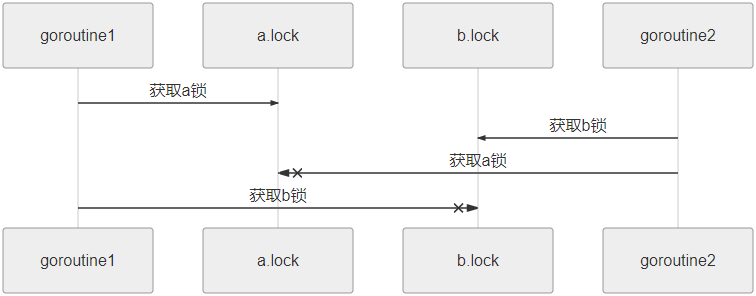

Go语言死锁、活锁和饥饿概述
本节我们来介绍一下死锁、活锁和饥饿这三个概念。
死锁发生的条件有如下几种：
最直观的理解是，p0 等待 p1 占用的资源，而 p1 而在等待 p0 占用的资源，于是两个进程就相互等待。
死锁解决办法：
死锁程序是所有并发进程彼此等待的程序，在这种情况下，如果没有外界的干预，这个程序将永远无法恢复。
为了便于大家理解死锁是什么，我们先来看一个例子（忽略代码中任何不知道的类型，函数，方法或是包，只理解什么是死锁即可），代码如下所示：
例如线程 1 可以使用资源，但它很礼貌，让其他线程先使用资源，线程 2 也可以使用资源，但它同样很绅士，也让其他线程先使用资源。就这样你让我，我让你，最后两个线程都无法使用资源。
活锁通常发生在处理事务消息中，如果不能成功处理某个消息，那么消息处理机制将回滚事务，并将它重新放到队列的开头。这样，错误的事务被一直回滚重复执行，这种形式的活锁通常是由过度的错误恢复代码造成的，因为它错误地将不可修复的错误认为是可修复的错误。
当多个相互协作的线程都对彼此进行相应而修改自己的状态，并使得任何一个线程都无法继续执行时，就导致了活锁。这就像两个过于礼貌的人在路上相遇，他们彼此让路，然后在另一条路上相遇，然后他们就一直这样避让下去。
要解决这种活锁问题，需要在重试机制中引入随机性。例如在网络上发送数据包，如果检测到冲突，都要停止并在一段时间后重发，如果都在 1 秒后重发，还是会冲突，所以引入随机性可以解决该类问题。
下面通过示例来演示一下活锁：
活锁和死锁的区别在于，处于活锁的实体是在不断的改变状态，所谓的“活”，而处于死锁的实体表现为等待，活锁有可能自行解开，死锁则不能。
与死锁不同的是，饥饿锁在一段时间内，优先级低的线程最终还是会执行的，比如高优先级的线程执行完之后释放了资源。
活锁与饥饿是无关的，因为在活锁中，所有并发进程都是相同的，并且没有完成工作。更广泛地说，饥饿通常意味着有一个或多个贪婪的并发进程，它们不公平地阻止一个或多个并发进程，以尽可能有效地完成工作，或者阻止全部并发进程。
下面的示例程序中包含了一个贪婪的 goroutine 和一个平和的 goroutine：
假设两种 worker 都有同样大小的临界区，而不是认为贪婪的 worker 的算法更有效（或调用 Lock 和 Unlock 的时候，它们也不是缓慢的），我们得出这样的结论，贪婪的 worker 不必要地扩大其持有共享锁上的临界区，井阻止（通过饥饿）平和的 worker 的 goroutine 高效工作。
只要有共享资源的访问，必定要使其逻辑上进行顺序化和原子化，确保访问一致，这绕不开锁这个概念。
死锁
死锁是指两个或两个以上的进程（或线程）在执行过程中，因争夺资源而造成的一种互相等待的现象，若无外力作用，它们都将无法推进下去。此时称系统处于死锁状态或系统产生了死锁，这些永远在互相等待的进程称为死锁进程。死锁发生的条件有如下几种：
1) 互斥条件
线程对资源的访问是排他性的，如果一个线程对占用了某资源，那么其他线程必须处于等待状态，直到该资源被释放。2) 请求和保持条件
线程 T1 至少已经保持了一个资源 R1 占用，但又提出使用另一个资源 R2 请求，而此时，资源 R2 被其他线程 T2 占用，于是该线程 T1 也必须等待，但又对自己保持的资源 R1 不释放。3) 不剥夺条件
线程已获得的资源，在未使用完之前，不能被其他线程剥夺，只能在使用完以后由自己释放。4) 环路等待条件
在死锁发生时，必然存在一个“进程 - 资源环形链”，即：{p0,p1,p2,...pn}，进程 p0（或线程）等待 p1 占用的资源，p1 等待 p2 占用的资源，pn 等待 p0 占用的资源。最直观的理解是，p0 等待 p1 占用的资源，而 p1 而在等待 p0 占用的资源，于是两个进程就相互等待。
死锁解决办法：
- 如果并发查询多个表，约定访问顺序；
- 在同一个事务中，尽可能做到一次锁定获取所需要的资源；
- 对于容易产生死锁的业务场景，尝试升级锁颗粒度，使用表级锁；
- 采用分布式事务锁或者使用乐观锁。
死锁程序是所有并发进程彼此等待的程序，在这种情况下，如果没有外界的干预，这个程序将永远无法恢复。
为了便于大家理解死锁是什么，我们先来看一个例子（忽略代码中任何不知道的类型，函数，方法或是包，只理解什么是死锁即可），代码如下所示：
package main
import (
"fmt"
"runtime"
"sync"
"time"
)
type value struct {
memAccess sync.Mutex
value int
}
func main() {
runtime.GOMAXPROCS(3)
var wg sync.WaitGroup
sum := func(v1, v2 *value) {
defer wg.Done()
v1.memAccess.Lock()
time.Sleep(2 * time.Second)
v2.memAccess.Lock()
fmt.Printf("sum = %d\n", v1.value+v2.value)
v2.memAccess.Unlock()
v1.memAccess.Unlock()
}
product := func(v1, v2 *value) {
defer wg.Done()
v2.memAccess.Lock()
time.Sleep(2 * time.Second)
v1.memAccess.Lock()
fmt.Printf("product = %d\n", v1.value*v2.value)
v1.memAccess.Unlock()
v2.memAccess.Unlock()
}
var v1, v2 value
v1.value = 1
v2.value = 1
wg.Add(2)
go sum(&v1, &v2)
go product(&v1, &v2)
wg.Wait()
}
运行上面的代码，可能会看到：fatal error: all goroutines are asleep - deadlock!
为什么呢？如果仔细观察，就可以在此代码中看到时机问题，以下是运行时的图形表示。

图 ：一个因时间问题导致死锁的演示
图 ：一个因时间问题导致死锁的演示
活锁
活锁是另一种形式的活跃性问题，该问题尽管不会阻塞线程，但也不能继续执行，因为线程将不断重复同样的操作，而且总会失败。例如线程 1 可以使用资源，但它很礼貌，让其他线程先使用资源，线程 2 也可以使用资源，但它同样很绅士，也让其他线程先使用资源。就这样你让我，我让你，最后两个线程都无法使用资源。
活锁通常发生在处理事务消息中，如果不能成功处理某个消息，那么消息处理机制将回滚事务，并将它重新放到队列的开头。这样，错误的事务被一直回滚重复执行，这种形式的活锁通常是由过度的错误恢复代码造成的，因为它错误地将不可修复的错误认为是可修复的错误。
当多个相互协作的线程都对彼此进行相应而修改自己的状态，并使得任何一个线程都无法继续执行时，就导致了活锁。这就像两个过于礼貌的人在路上相遇，他们彼此让路，然后在另一条路上相遇，然后他们就一直这样避让下去。
要解决这种活锁问题，需要在重试机制中引入随机性。例如在网络上发送数据包，如果检测到冲突，都要停止并在一段时间后重发，如果都在 1 秒后重发，还是会冲突，所以引入随机性可以解决该类问题。
下面通过示例来演示一下活锁：
package main
import (
"bytes"
"fmt"
"runtime"
"sync"
"sync/atomic"
"time"
)
func main() {
runtime.GOMAXPROCS(3)
cv := sync.NewCond(&sync.Mutex{})
go func() {
for range time.Tick(1 * time.Second) { // 通过tick控制两个人的步调
cv.Broadcast()
}
}()
takeStep := func() {
cv.L.Lock()
cv.Wait()
cv.L.Unlock()
}
tryDir := func(dirName string, dir *int32, out *bytes.Buffer) bool {
fmt.Fprintf(out, " %+v", dirName)
atomic.AddInt32(dir, 1)
takeStep() //走上一步
if atomic.LoadInt32(dir) == 1 { //走成功就返回
fmt.Fprint(out, ". Success!")
return true
}
takeStep() // 没走成功，再走回来
atomic.AddInt32(dir, -1)
return false
}
var left, right int32
tryLeft := func(out *bytes.Buffer) bool {
return tryDir("向左走", &left, out)
}
tryRight := func(out *bytes.Buffer) bool {
return tryDir("向右走", &right, out)
}
walk := func(walking *sync.WaitGroup, name string) {
var out bytes.Buffer
defer walking.Done()
defer func() { fmt.Println(out.String()) }()
fmt.Fprintf(&out, "%v is trying to scoot:", name)
for i := 0; i < 5; i++ {
if tryLeft(&out) || tryRight(&out) {
return
}
}
fmt.Fprintf(&out, "\n%v is tried!", name)
}
var trail sync.WaitGroup
trail.Add(2)
go walk(&trail, "男人") // 男人在路上走
go walk(&trail, "女人") // 女人在路上走
trail.Wait()
}
输出结果如下：
go run main.go
女人 is trying to scoot: 向左走 向右走 向左走 向右走 向左走 向右走 向左走 向右走 向左走 向右走
女人 is tried!
男人 is trying to scoot: 向左走 向右走 向左走 向右走 向左走 向右走 向左走 向右走 向左走 向右走
男人 is tried!
活锁和死锁的区别在于，处于活锁的实体是在不断的改变状态，所谓的“活”，而处于死锁的实体表现为等待，活锁有可能自行解开，死锁则不能。
饥饿
饥饿是指一个可运行的进程尽管能继续执行，但被调度器无限期地忽视，而不能被调度执行的情况。与死锁不同的是，饥饿锁在一段时间内，优先级低的线程最终还是会执行的，比如高优先级的线程执行完之后释放了资源。
活锁与饥饿是无关的，因为在活锁中，所有并发进程都是相同的，并且没有完成工作。更广泛地说，饥饿通常意味着有一个或多个贪婪的并发进程，它们不公平地阻止一个或多个并发进程，以尽可能有效地完成工作，或者阻止全部并发进程。
下面的示例程序中包含了一个贪婪的 goroutine 和一个平和的 goroutine：
package main
import (
"fmt"
"runtime"
"sync"
"time"
)
func main() {
runtime.GOMAXPROCS(3)
var wg sync.WaitGroup
const runtime = 1 * time.Second
var sharedLock sync.Mutex
greedyWorker := func() {
defer wg.Done()
var count int
for begin := time.Now(); time.Since(begin) <= runtime; {
sharedLock.Lock()
time.Sleep(3 * time.Nanosecond)
sharedLock.Unlock()
count++
}
fmt.Printf("Greedy worker was able to execute %v work loops\n", count)
}
politeWorker := func() {
defer wg.Done()
var count int
for begin := time.Now(); time.Since(begin) <= runtime; {
sharedLock.Lock()
time.Sleep(1 * time.Nanosecond)
sharedLock.Unlock()
sharedLock.Lock()
time.Sleep(1 * time.Nanosecond)
sharedLock.Unlock()
sharedLock.Lock()
time.Sleep(1 * time.Nanosecond)
sharedLock.Unlock()
count++
}
fmt.Printf("Polite worker was able to execute %v work loops\n", count)
}
wg.Add(2)
go greedyWorker()
go politeWorker()
wg.Wait()
}
输出如下：
Greedy worker was able to execute 276 work loops
Polite worker was able to execute 92 work loops
假设两种 worker 都有同样大小的临界区，而不是认为贪婪的 worker 的算法更有效（或调用 Lock 和 Unlock 的时候，它们也不是缓慢的），我们得出这样的结论，贪婪的 worker 不必要地扩大其持有共享锁上的临界区，井阻止（通过饥饿）平和的 worker 的 goroutine 高效工作。
总结
不适用锁肯定会出问题。如果用了，虽然解了前面的问题，但是又出现了更多的新问题。- 死锁：是因为错误的使用了锁，导致异常；
- 活锁：是饥饿的一种特殊情况，逻辑上感觉对，程序也一直在正常的跑，但就是效率低，逻辑上进行不下去；
- 饥饿：与锁使用的粒度有关，通过计数取样，可以判断进程的工作效率。
只要有共享资源的访问，必定要使其逻辑上进行顺序化和原子化，确保访问一致，这绕不开锁这个概念。
关注公众号「站长严长生」，在手机上阅读所有教程，随时随地都能学习。内含一款搜索神器，免费下载全网书籍和视频。

微信扫码关注公众号